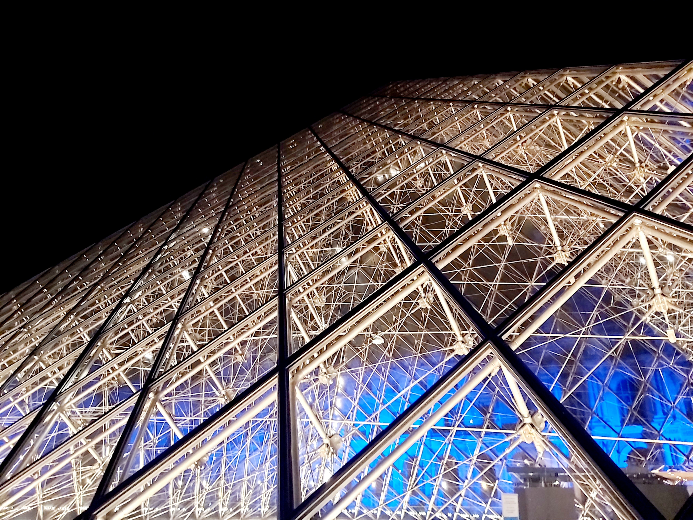

Zakopanė – miestas pietų Lenkijoje, Mažosios Lenkijos vaivadijoje. Tatrų apskrities centras.
Zakopanėje yra kalnų slidinėjimo bei pasivaikščiojimo po kalnus trasos.
Čia gaminami vietiniai sūriai iš
avių
pieno.
Zakopanės architektūros vyraujantis stilius kalnų eglės formos stilizuoti namai yra sukurti
lietuvių architekto
Stanislovo Vitkevičiaus ir vėliau tobulinti jo sūnaus.
Paryžius – Prancūzijos sostinė. Su 2,14 mln. gyventojų (2020 m.) yra penktas pagal dydį Europos Sąjungos ir devintas pagal dydį Europos žemyno miestas. Įsikūręs Senos upės vingyje, abiejuose upės krantuose. Nuo XVII a. buvo vienas didžiausių Europos finansų, diplomatijos, prekybos, mados, gastronomijos, mokslo ir meno centrų. Visame pasaulyje gerai žinomas dėl gausybės istorinių paminklų bei savo unikalios kultūros.
Roma – Italijos sostinė (nuo 1870 m.) ir didžiausias miestas, esantis šalies centrinėje dalyje prie
Tibro upės.
Didelis turizmo centras, turintis daugybę antikinių ir viduramžių paminklų (I amžiaus Koliziejus, rūmai,
akvedukai,
fontanai ir kiti statiniai), turtingus muziejus.
Roma yra trečias labiausiai turistų lankomas miestas Europos Sąjungoje ir aštuntas pagal šį rodiklį pasaulyje
(2007 m.).
Pačiame mieste yra Vatikano valstybė – popiežiaus rezidencija.

Oslas – Norvegijos sostinė. Osle gyvena apie 11,5 proc., o su priemiesčiais (iš viso aglomeracijoje –
1 588 457
gyventojų 2020 m.) dar didesnė dalis Norvegijos gyventojų.
Pagal senovės norvegų sagas, Oslas įkurtas apie 1048 Norvegijos karaliaus Haraldo III-ojo. Neseniai daryti
archeologiniai tyrinėjimai nustatė, kad prieš 1000 m. čia buvo krikščioniškų kapų, o tai reiškia, kad buvo ir
ankstesnė
miesto tipo gyvenvietė. Dėl to 2000 m. Oslas šventė savo tūkstantmetį.